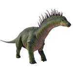

Useful Website
Amargasaurus is named after the site of its discovery, La Amarga Formation in Argentina, and is an herbivorous dinosaur of the Dicraeosauridae family weighing around 2.9 tonnes and spanning 9.5m in length. Its long neck and sharp teeth allow it to eat tough vegetation from trees, while the two rows of long spines on its neck and back help Amargasaurus to defend itself from predators – an important characteristic given that this dinosaur has poor hearing and is unable to move at high speeds.
